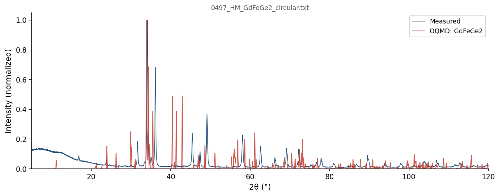

| Element | Expected (mol frac) | Measured (mol frac) | Δ (mol frac) | Δ (%) |
|---|---|---|---|---|
| Fe | 0.2500 | 0.3899 | +0.1399 | +13.99% |
| Gd | 0.2500 | 0.2039 | -0.0461 | -4.61% |
| Ge | 0.5000 | 0.4061 | -0.0939 | -9.39% |
242 OQMD entries in the Fe-Gd-Ge element system (22 on hull, 65 ICSD-tagged). OQMD: negative = below hull (stable). Sorted most stable first.
| Composition | Stability (meV/atom) | ΔE (meV/atom) | ICSD | Space | Entry | CIF |
|---|---|---|---|---|---|---|
Gd1Ge1 |
-46 | -879.0 | ✓ | Gd-Ge | 18848 | CIF |
Gd3Ge5 |
-33 | -733.3 | Gd-Ge | 1795275 | CIF | |
Gd5Ge3 |
-30 | -779.1 | ✓ | Gd-Ge | 8025 | CIF |
Fe2Gd1Ge2 |
-23 | -464.0 | ✓ | Fe-Gd-Ge | 18402 | CIF |
Fe2Ge3 |
-23 | -124.6 | Fe-Ge | 1800406 | CIF | |
Gd4Ge3 |
-20 | -855.8 | Gd-Ge | 1479289 | CIF | |
Fe1Gd1Ge3 |
-19 | -471.4 | Fe-Gd-Ge | 1364532 | CIF | |
Fe3Ge2 |
-18 | -141.2 | Fe-Ge | 1793830 | CIF | |
Fe5Ge1 |
-11 | -87.8 | Fe-Ge | 1987656 | CIF | |
Fe3Ge1 |
-9 | -115.8 | Fe-Ge | 675178 | CIF | |
Fe3Gd2Ge5 |
-9 | -476.3 | Fe-Gd-Ge | 1800260 | CIF | |
Fe6Gd1Ge6 |
-5 | -274.3 | Fe-Gd-Ge | 1791584 | CIF | |
Gd3Ge4 |
-5 | -800.3 | ✓ | Gd-Ge | 20756 | CIF |
Fe5Gd1 |
-4 | -29.5 | ✓ | Fe-Gd | 30180 | CIF |
Fe3Gd1 |
-3 | -37.4 | ✓ | Fe-Gd | 30182 | CIF |
Fe1 |
+0 | 0.0 | ✓ | Fe | 8568 | CIF |
Fe1 |
+0 | 0.0 | Fe | 1522121 | CIF | |
Fe1 |
+0 | 0.0 | Fe | 1908165 | CIF | |
Fe1 |
+0 | 0.0 | Fe | 1522123 | CIF | |
Gd1 |
+0 | 0.0 | ✓ | Gd | 9623 | CIF |
Ge1 |
+0 | 0.0 | ✓ | Ge | 2065280 | CIF |
Ge1 |
+0 | 0.0 | ✓ | Ge | 7651 | CIF |
Gd4Ge3 |
+0 | -855.8 | Gd-Ge | 1479321 | CIF | |
Fe3Ge1 |
+0 | -115.7 | Fe-Ge | 1782434 | CIF | |
Fe1Gd1Ge2 |
+0 | -545.2 | Fe-Gd-Ge | 1377698 | CIF | |
Fe3Ge1 |
+0 | -115.5 | ✓ | Fe-Ge | 647202 | CIF |
Ge1 |
+0 | 0.3 | Ge | 1215508 | CIF | |
Fe3Ge1 |
+0 | -115.5 | Fe-Ge | 1339462 | CIF | |
Fe2Gd1 |
+0 | -33.0 | ✓ | Fe-Gd | 18836 | CIF |
Fe1 |
+0 | 0.4 | ✓ | Fe | 22514 | CIF |
Fe3Ge1 |
+0 | -115.4 | Fe-Ge | 1916127 | CIF | |
Fe7Gd2 |
+0 | -34.4 | Fe-Gd | 1791778 | CIF | |
Gd1 |
+1 | 0.8 | Gd | 1215418 | CIF | |
Gd1 |
+1 | 1.0 | Gd | 1216041 | CIF | |
Gd1 |
+1 | 1.5 | ✓ | Gd | 9312 | CIF |
Fe1 |
+2 | 1.6 | Fe | 1215148 | CIF | |
Gd3Ge5 |
+2 | -731.7 | ✓ | Gd-Ge | 26274 | CIF |
Fe2Gd1 |
+2 | -31.4 | Fe-Gd | 1590981 | CIF | |
Fe3Gd2Ge5 |
+4 | -472.1 | Fe-Gd-Ge | 1792821 | CIF | |
Fe1Ge1 |
+5 | -127.7 | ✓ | Fe-Ge | 647200 | CIF |
Fe13Ge3 |
+9 | -86.2 | ✓ | Fe-Ge | 19347 | CIF |
Gd5Ge4 |
+9 | -852.3 | ✓ | Gd-Ge | 15063 | CIF |
Fe4Gd1Ge2 |
+9 | -322.0 | Fe-Gd-Ge | 1792979 | CIF | |
Ge1 |
+10 | 9.9 | ✓ | Ge | 21252 | CIF |
Gd1 |
+11 | 11.3 | ✓ | Gd | 3925 | CIF |
Fe3Ge1 |
+11 | -104.4 | ✓ | Fe-Ge | 4296 | CIF |
Gd1 |
+12 | 11.5 | Gd | 1215685 | CIF | |
Gd1 |
+12 | 11.6 | Gd | 1214527 | CIF | |
Fe3Ge1 |
+12 | -103.8 | ✓ | Fe-Ge | 647201 | CIF |
Fe3Ge1 |
+12 | -103.7 | Fe-Ge | 1965383 | CIF | |
Fe3Ge1 |
+12 | -103.7 | Fe-Ge | 1907716 | CIF | |
Fe3Ge1 |
+12 | -103.7 | Fe-Ge | 675309 | CIF | |
Fe3Ge1 |
+12 | -103.6 | Fe-Ge | 324792 | CIF | |
Gd1 |
+12 | 12.2 | Gd | 1215774 | CIF | |
Gd1 |
+13 | 13.0 | Gd | 1215863 | CIF | |
Gd1 |
+17 | 16.7 | ✓ | Gd | 117572 | CIF |
Gd1 |
+17 | 16.8 | Gd | 1215328 | CIF | |
Gd1 |
+17 | 17.1 | ✓ | Gd | 8139 | CIF |
Gd1 |
+17 | 17.1 | ✓ | Gd | 51887 | CIF |
Gd1 |
+17 | 17.2 | ✓ | Gd | 88553 | CIF |
Ge1 |
+18 | 17.6 | ✓ | Ge | 30437 | CIF |
Fe1 |
+18 | 17.8 | Fe | 1215861 | CIF | |
Gd1 |
+18 | 18.2 | Gd | 1215239 | CIF | |
Fe17Gd2 |
+18 | -0.4 | ✓ | Fe-Gd | 89232 | CIF |
Gd1 |
+19 | 18.8 | Gd | 1214616 | CIF | |
Fe12Gd1 |
+19 | 5.5 | Fe-Gd | 1783515 | CIF | |
Fe17Gd2 |
+19 | 0.6 | Fe-Gd | 1280521 | CIF | |
Fe17Gd2 |
+20 | 1.0 | ✓ | Fe-Gd | 30183 | CIF |
Fe17Gd2 |
+20 | 1.1 | ✓ | Fe-Gd | 666000 | CIF |
Fe23Gd6 |
+20 | -13.5 | ✓ | Fe-Gd | 30181 | CIF |
Fe2Gd1 |
+20 | -13.2 | Fe-Gd | 1800980 | CIF | |
Gd1Ge3 |
+21 | -467.5 | Gd-Ge | 1365254 | CIF | |
Ge1 |
+25 | 24.7 | ✓ | Ge | 121914 | CIF |
Fe1Ge1 |
+25 | -107.9 | ✓ | Fe-Ge | 7983 | CIF |
Gd2Ge5 |
+27 | -531.3 | Gd-Ge | 1793031 | CIF | |
Gd11Ge10 |
+28 | -843.4 | ✓ | Gd-Ge | 2052512 | CIF |
Fe3Ge1 |
+29 | -87.3 | Fe-Ge | 301900 | CIF | |
Fe1Ge1 |
+29 | -103.5 | ✓ | Fe-Ge | 7982 | CIF |
Fe1Gd3 |
+31 | 18.3 | Fe-Gd | 1787108 | CIF | |
Fe5Ge3 |
+31 | -105.7 | Fe-Ge | 1795206 | CIF | |
Fe3Gd2 |
+33 | 2.8 | Fe-Gd | 1962127 | CIF | |
Gd1Ge2 |
+34 | -617.8 | Gd-Ge | 1370101 | CIF | |
Fe1Gd1Ge3 |
+35 | -436.1 | Fe-Gd-Ge | 1902227 | CIF | |
Fe6Ge5 |
+36 | -100.4 | ✓ | Fe-Ge | 38746 | CIF |
Fe1Ge2 |
+39 | -65.0 | ✓ | Fe-Ge | 7790 | CIF |
Gd3Ge2 |
+44 | -771.0 | Gd-Ge | 1965624 | CIF | |
Gd3Ge7 |
+44 | -542.6 | Gd-Ge | 1453989 | CIF | |
Gd1Ge2 |
+46 | -605.8 | ✓ | Gd-Ge | 77112 | CIF |
Gd3Ge5 |
+48 | -685.1 | Gd-Ge | 1799761 | CIF | |
Fe2Ge1 |
+49 | -81.1 | Fe-Ge | 1472988 | CIF | |
Fe2Ge1 |
+49 | -80.8 | Fe-Ge | 1473658 | CIF | |
Fe2Ge1 |
+51 | -79.0 | Fe-Ge | 1277127 | CIF | |
Fe4Gd3Ge4 |
+53 | -477.4 | Fe-Gd-Ge | 1797065 | CIF | |
Fe1Gd1 |
+54 | 29.4 | Fe-Gd | 1435369 | CIF | |
Fe1Gd1 |
+54 | 29.4 | Fe-Gd | 1435371 | CIF | |
Fe2Ge1 |
+56 | -74.0 | Fe-Ge | 1793728 | CIF | |
Ge1 |
+58 | 58.3 | ✓ | Ge | 2049728 | CIF |
Fe1Gd1Ge2 |
+59 | -486.7 | ✓ | Fe-Gd-Ge | 30184 | CIF |
Fe1Gd1 |
+61 | 36.1 | Fe-Gd | 1435368 | CIF | |
Fe1Gd1 |
+61 | 36.1 | Fe-Gd | 1435370 | CIF | |
Fe2Ge1 |
+66 | -63.4 | Fe-Ge | 1343796 | CIF | |
Gd2Ge1 |
+72 | -620.7 | Gd-Ge | 1521152 | CIF | |
Gd2Ge1 |
+81 | -611.5 | Gd-Ge | 1520538 | CIF | |
Gd1Ge3 |
+85 | -403.9 | Gd-Ge | 343852 | CIF | |
Fe5Ge3 |
+85 | -52.0 | Fe-Ge | 1799897 | CIF | |
Ge1 |
+86 | 85.5 | ✓ | Ge | 2032924 | CIF |
Fe2Ge1 |
+86 | -44.1 | ✓ | Fe-Ge | 30187 | CIF |
Fe1 |
+86 | 86.4 | ✓ | Fe | 51781 | CIF |
Fe1 |
+88 | 87.6 | ✓ | Fe | 30158 | CIF |
Fe1 |
+89 | 88.6 | Fe | 1214970 | CIF | |
Fe3Ge1 |
+90 | -25.7 | Fe-Ge | 1791987 | CIF | |
Gd1Ge5 |
+94 | -231.4 | ✓ | Gd-Ge | 31366 | CIF |
Fe1Ge2 |
+96 | -8.2 | ✓ | Fe-Ge | 19265 | CIF |
Gd1Ge2 |
+100 | -551.9 | ✓ | Gd-Ge | 2027033 | CIF |
Fe2Ge3 |
+103 | -21.8 | Fe-Ge | 427023 | CIF | |
Fe1Gd1 |
+110 | 85.2 | Fe-Gd | 1782647 | CIF | |
Fe1 |
+112 | 111.9 | Fe | 1215683 | CIF | |
Gd1Ge3 |
+113 | -375.4 | Gd-Ge | 319366 | CIF | |
Fe1Ge2 |
+119 | 15.3 | Fe-Ge | 1339412 | CIF | |
Gd1Ge5 |
+119 | -206.6 | Gd-Ge | 1794746 | CIF | |
Fe1 |
+129 | 129.0 | Fe | 1214792 | CIF | |
Fe1Ge1 |
+133 | 0.5 | Fe-Ge | 1229459 | CIF | |
Fe1Ge1 |
+134 | 1.1 | Fe-Ge | 306642 | CIF | |
Fe1Ge1 |
+134 | 1.3 | Fe-Ge | 1522211 | CIF | |
Fe1Ge1 |
+135 | 2.0 | Fe-Ge | 1220294 | CIF | |
Fe1 |
+138 | 138.2 | Fe | 1214881 | CIF | |
Ge1 |
+143 | 142.8 | ✓ | Ge | 22044 | CIF |
Ge1 |
+146 | 145.7 | ✓ | Ge | 3485 | CIF |
Gd1 |
+146 | 146.0 | Gd | 1522004 | CIF | |
Gd1 |
+146 | 146.0 | Gd | 1522007 | CIF | |
Gd1 |
+146 | 146.1 | ✓ | Gd | 17319 | CIF |
Gd1 |
+146 | 146.1 | Gd | 1215150 | CIF | |
Gd2Ge1 |
+147 | -545.4 | Gd-Ge | 1416017 | CIF | |
Gd1Ge3 |
+147 | -341.6 | Gd-Ge | 301581 | CIF | |
Ge1 |
+150 | 150.4 | ✓ | Ge | 23201 | CIF |
Fe1Ge1 |
+159 | 25.9 | Fe-Ge | 338184 | CIF | |
Fe1 |
+161 | 161.5 | ✓ | Fe | 7505 | CIF |
Fe1 |
+169 | 169.1 | Fe | 1215237 | CIF | |
Fe1 |
+175 | 174.9 | Fe | 1214614 | CIF | |
Fe1 |
+176 | 175.5 | ✓ | Fe | 21053 | CIF |
Fe1 |
+177 | 177.3 | Fe | 1215416 | CIF | |
Gd1 |
+178 | 177.8 | Gd | 1214883 | CIF | |
Fe1 |
+181 | 181.3 | ✓ | Fe | 2031492 | CIF |
Fe1 |
+182 | 182.0 | Fe | 1216039 | CIF | |
Gd3Ge1 |
+186 | -333.7 | Gd-Ge | 347151 | CIF | |
Fe1 |
+189 | 188.9 | Fe | 1214525 | CIF | |
Fe3Gd1 |
+190 | 152.2 | Fe-Gd | 321693 | CIF | |
Gd1 |
+191 | 190.8 | Gd | 1214705 | CIF | |
Gd1 |
+191 | 191.1 | Gd | 1215061 | CIF | |
Gd1 |
+197 | 197.1 | Gd | 1214794 | CIF | |
Fe1 |
+198 | 198.2 | Fe | 1215326 | CIF | |
Fe1 |
+198 | 198.2 | Fe | 1215391 | CIF | |
Fe1 |
+198 | 198.2 | ✓ | Fe | 2031493 | CIF |
Gd3Ge1 |
+208 | -311.1 | Gd-Ge | 322665 | CIF | |
Gd1Ge1 |
+212 | -667.0 | Gd-Ge | 1104025 | CIF | |
Fe1Gd1 |
+217 | 192.2 | Fe-Gd | 1220293 | CIF | |
Gd1Ge1 |
+218 | -661.0 | Gd-Ge | 1234957 | CIF | |
Gd3Ge1 |
+222 | -297.2 | Gd-Ge | 298289 | CIF | |
Ge1 |
+233 | 233.0 | Ge | 1215597 | CIF | |
Ge1 |
+233 | 233.1 | ✓ | Ge | 690322 | CIF |
Fe1Ge1 |
+236 | 103.5 | Fe-Ge | 327726 | CIF | |
Fe1Gd1 |
+247 | 222.2 | Fe-Gd | 306820 | CIF | |
Fe2Ge1 |
+247 | 117.3 | Fe-Ge | 1435868 | CIF | |
Ge1 |
+248 | 248.2 | Ge | 1215864 | CIF | |
Ge1 |
+249 | 248.6 | Ge | 1215240 | CIF | |
Ge1 |
+249 | 248.7 | Ge | 1215775 | CIF | |
Ge1 |
+254 | 253.5 | Ge | 1472732 | CIF | |
Fe1Ge4 |
+259 | 196.6 | Fe-Ge | 1822262 | CIF | |
Gd1 |
+262 | 261.8 | Gd | 1214972 | CIF | |
Fe1Gd2Ge1 |
+265 | -266.6 | Fe-Gd-Ge | 549837 | CIF | |
Ge1 |
+277 | 276.6 | Ge | 1214706 | CIF | |
Gd1Ge1 |
+292 | -586.8 | Gd-Ge | 304839 | CIF | |
Fe2Ge1 |
+295 | 164.7 | Fe-Ge | 1590953 | CIF | |
Gd1Ge1 |
+296 | -582.7 | Gd-Ge | 336381 | CIF | |
Ge1 |
+300 | 300.5 | ✓ | Ge | 23200 | CIF |
Fe1Gd3 |
+305 | 292.9 | Fe-Gd | 323346 | CIF | |
Gd1Ge2 |
+310 | -341.4 | Gd-Ge | 1591434 | CIF | |
Ge1 |
+316 | 315.6 | Ge | 1214795 | CIF | |
Ge1 |
+317 | 317.2 | ✓ | Ge | 16307 | CIF |
Ge1 |
+322 | 321.9 | Ge | 1215062 | CIF | |
Fe3Gd1 |
+327 | 289.5 | Fe-Gd | 312804 | CIF | |
Fe2Gd3 |
+331 | 311.3 | Fe-Gd | 427022 | CIF | |
Ge1 |
+333 | 332.8 | Ge | 1215329 | CIF | |
Ge1 |
+334 | 334.2 | ✓ | Ge | 687495 | CIF |
Ge1 |
+334 | 334.4 | Ge | 1215686 | CIF | |
Fe1Gd1 |
+336 | 310.7 | Fe-Gd | 338362 | CIF | |
Ge1 |
+336 | 335.6 | Ge | 1214528 | CIF | |
Ge1 |
+336 | 335.7 | ✓ | Ge | 690321 | CIF |
Ge1 |
+336 | 336.1 | Ge | 1214617 | CIF | |
Fe2Ge1 |
+340 | 210.5 | ✓ | Fe-Ge | 18837 | CIF |
Fe2Ge1 |
+341 | 210.7 | ✓ | Fe-Ge | 51790 | CIF |
Ge1 |
+341 | 341.0 | Ge | 1215419 | CIF | |
Fe1Gd3 |
+342 | 329.5 | Fe-Gd | 347832 | CIF | |
Ge1 |
+343 | 343.3 | Ge | 1521888 | CIF | |
Ge1 |
+343 | 343.3 | Ge | 1521892 | CIF | |
Ge1 |
+344 | 343.5 | ✓ | Ge | 22272 | CIF |
Ge1 |
+344 | 344.1 | Ge | 1215151 | CIF | |
Fe1 |
+348 | 348.0 | Fe | 1215059 | CIF | |
Fe1Gd3 |
+358 | 345.3 | Fe-Gd | 300609 | CIF | |
Fe1 |
+366 | 366.0 | Fe | 1215772 | CIF | |
Ge1 |
+368 | 367.6 | Ge | 1214884 | CIF | |
Ge1 |
+384 | 384.0 | Ge | 1214973 | CIF | |
Ge1 |
+385 | 384.7 | Ge | 1280387 | CIF | |
Fe3Gd1 |
+389 | 351.1 | Fe-Gd | 302262 | CIF | |
Fe3Gd1 |
+395 | 357.4 | Fe-Gd | 346179 | CIF | |
Gd1Ge3 |
+395 | -93.6 | Gd-Ge | 312123 | CIF | |
Gd3Ge1 |
+411 | -108.2 | Gd-Ge | 308824 | CIF | |
Gd1Ge1 |
+427 | -452.4 | Gd-Ge | 1229576 | CIF | |
Gd1 |
+441 | 440.6 | Gd | 1215596 | CIF | |
Fe1Gd1Ge2 |
+458 | -87.5 | Fe-Gd-Ge | 421779 | CIF | |
Fe1Gd3 |
+469 | 457.0 | Fe-Gd | 311151 | CIF | |
Fe2Gd1Ge1 |
+475 | 35.3 | Fe-Gd-Ge | 525539 | CIF | |
Fe1Ge1 |
+494 | 361.1 | Fe-Ge | 1105827 | CIF | |
Fe1Ge3 |
+498 | 420.4 | Fe-Ge | 303708 | CIF | |
Fe1Ge1 |
+499 | 365.6 | Fe-Ge | 1225973 | CIF | |
Fe1 |
+499 | 499.3 | Fe | 1214703 | CIF | |
Fe1Ge3 |
+500 | 422.1 | Fe-Ge | 322984 | CIF | |
Fe1Gd1 |
+508 | 483.4 | Fe-Gd | 327904 | CIF | |
Fe1Ge3 |
+510 | 432.3 | Fe-Ge | 347470 | CIF | |
Fe1 |
+517 | 516.7 | Fe | 1215594 | CIF | |
Fe1Ge3 |
+532 | 454.4 | Fe-Ge | 314250 | CIF | |
Fe1Gd1 |
+545 | 520.3 | Fe-Gd | 1229458 | CIF | |
Ge1 |
+587 | 586.6 | Ge | 1215953 | CIF | |
Fe1Gd1 |
+596 | 570.5 | Fe-Gd | 1106005 | CIF | |
Fe1 |
+638 | 638.3 | ✓ | Fe | 2020395 | CIF |
Fe1 |
+760 | 759.9 | ✓ | Fe | 21731 | CIF |
Fe2Ge1 |
+802 | 671.9 | Fe-Ge | 1232945 | CIF | |
Fe1Ge2 |
+834 | 730.5 | Fe-Ge | 1239546 | CIF | |
Gd1 |
+844 | 843.7 | Gd | 1215952 | CIF | |
Fe1Ge2 |
+886 | 782.2 | Fe-Ge | 1591399 | CIF | |
Fe1Ge1 |
+901 | 768.2 | Fe-Ge | 1222488 | CIF | |
Gd1Ge1 |
+968 | 89.2 | Gd-Ge | 1222605 | CIF | |
Gd2Ge1 |
+975 | 282.6 | Gd-Ge | 1593671 | CIF | |
Fe1Gd1 |
+1022 | 997.0 | Fe-Gd | 1225972 | CIF | |
Fe1 |
+1059 | 1058.9 | Fe | 1215950 | CIF | |
Fe2Gd1 |
+1185 | 1151.4 | Fe-Gd | 1232944 | CIF | |
Fe1 |
+1244 | 1243.9 | Fe | 1215505 | CIF | |
Fe1Gd2 |
+1402 | 1385.6 | Fe-Gd | 1593665 | CIF | |
Fe1Gd1 |
+1450 | 1424.5 | Fe-Gd | 1222487 | CIF | |
Gd2Ge1 |
+1685 | 992.2 | Gd-Ge | 1239741 | CIF | |
Gd1 |
+1855 | 1854.5 | Gd | 1215507 | CIF | |
Fe2Ge1 |
+2122 | 1992.2 | Fe-Ge | 1239547 | CIF |

7 known superconductor(s) in the GdFeGe2 element system. Sorted by Tc descending. ■ closest composition
| Compound | Formula | Tc (K) | Reference |
|---|---|---|---|
| Ge | Ge1 |
5.50 | Search |
| Ge | Ge1 |
5.35 | Search |
| Ge | Ge1 |
5.35 | Search |
| Ge1 | Ge1 |
5.35 | Search |
| Ge-II | Ge1 |
4.94 | 10.1103/PhysRevLett.102.237001 |
| Fe | Fe1 |
2.00 | Search |
| Fe | Fe1 |
2.00 | Search |